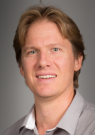

Personal webpageDr. Chris Doughty
"Biodiversity loss and climate change are two major challenges facing humanity. NAU assistant Professor Doughty's research combines computational and field methods to better understand how these changes will affect ecosystems, with a specific focus on tropical forests. One major goal of his research is to determine how climate change will affect tropical forests and how this might in turn impact global climate. He combines a large network of field plots from South America, Africa, and Asia with remote sensing and models to better understand and predict forest growth patterns and carbon uptake. Another major goal is to understand how the loss of large mammals will impact nutrient distribution and forest structure globally. He uses both simple and complex models to predict nutrient diffusion and verifies these models using both field and paleo-data."-(siccs)